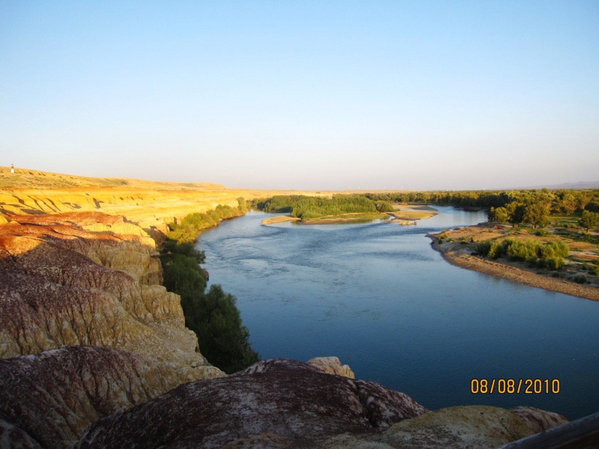
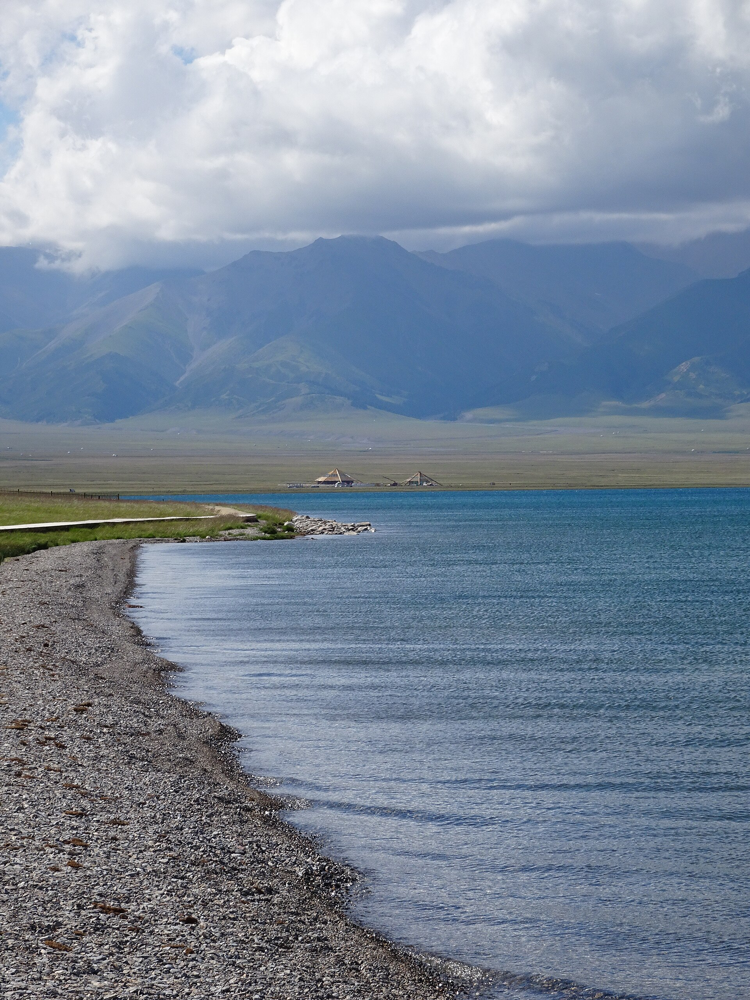

秋色优先
禾木、喀纳斯集中在9月27—29日，赶在10月1日国庆高峰前。禾木白天游，贾登峪住1晚、喀纳斯住1晚，9/29拍神仙湾晨雾后出山。
4人 · 两组情侣 · 2名司机｜9月25日深夜抵达，10月4日15:00返程。禾木只白天游，贾登峪住1晚、喀纳斯住1晚，沿五彩滩、魔鬼城一路向西，赛里木湖连住2晚收尾。
路线不是把景点简单串起来，而是围绕季节、航班和山区风险倒推：先抢秋色、再走雅丹，最后用高速完成赛里木湖往返。
禾木、喀纳斯集中在9月27—29日，赶在10月1日国庆高峰前。禾木白天游，贾登峪住1晚、喀纳斯住1晚，9/29拍神仙湾晨雾后出山。
乌鲁木齐向北走S21，经阿禾公路进入山区；从布尔津沿G3014南下克拉玛依，再接G30向西去赛里木湖，主线方向连续。
9月25日落地后在一嗨机场店取深蓝G318；10月4日15:00起飞，因此10月3日07:00离开赛里木湖返乌。四人先到酒店卸行李，再由一名司机去新疆昆仑宾馆停车场还车。
使用稳定的中文标注底图。点击右侧某一天可单独查看线路；橙色标景点、绿色标住宿、红色标加油、蓝色标服务区。喀纳斯核心区以区间车为主。


“纯驾驶”不含吃饭、拍照、排队、安检和景区换乘；长途日已为两名司机安排约2小时一次的轮换节点。






城市满油、半箱补油、两小时换司机。山区油站和服务驿站只作为备选，不能把行程建立在“到了再说”上。
| 路段 | 首选补油 | 休息/卫生间 | 服务能力与注意事项 |
|---|---|---|---|
| S21 乌鲁木齐—阿勒泰 | 乌鲁木齐满油；黄花沟或吉力湖补油 | 克拉美丽为主休息点 | 克拉美丽配套较完整；荒漠路段可能无信号，下载离线地图 |
| G681 阿禾公路 | 必须在阿勒泰加满 | 入口、也克阿恰、181吊桥驿站 | 沿线油站不作为唯一保障；备午餐、热水，随时接受天气管制 |
| 贾登峪—喀纳斯—布尔津 | 贾登峪、冲乎尔、布尔津 | 游客中心、贾登峪换乘点、冲乎尔镇 | 禾木村内不作为可靠加油点；进喀纳斯前补油。9/27住游客中心附近，车和大件行李留贾登峪至9/29，须由酒店书面确认停车与寄存 |
| G3014 布尔津—克拉玛依 | 布尔津满油；乌尔禾补油 | 乌尔禾、百口泉、克南服务区 | 克拉玛依城市维修、轮胎、洗车服务最完整 |
| G30 赛里木湖往返 | 克拉玛依满油；精河补油 | 奎屯/乌苏、托托、精河、五台、石河子 | 国庆服务区可能排队；不把正餐完全押在一个服务区 |
两组情侣每晚选择完全相同的房型和取消政策，住宿费用自然保持一致。山区优先保暖与热水，不为“网红景观房”牺牲睡眠。
手抓肉、羊肉汤、土火锅、哈萨克奶茶、酸奶、包尔萨克。景区午餐从简，晚上再点热菜。
冷水鱼、狗鱼或五道黑、俄罗斯风味酸奶。点鱼前确认重量、单价、做法和总价。
椒麻鸡、牛骨髓丸子汤、抓饭、大盘鸡。第二天长途，晚餐不饮酒、不过量。
高白鲑、羊肉、奶茶。进入景区前准备热水、面包、水果和方便食品，防止晚间餐馆提早关门。
按当前公开价格逐项列明；需要实名分时预约的提前买，没有查到强制预约公告的写明“未见强制预约”，不把未确认规则当成事实。
| 日期 / 地点 | 票价与交通 | 4人合计 | 预约与执行 |
|---|---|---|---|
| 9/26 乌伦古湖黄金海岸 | 成人票¥35/人 | ¥140 | 当前未见强制预约公告；导航游客中心停车场，出发前可拨0906-3667777确认营业与当日售票。 |
| 9/27 禾木 | 门票¥50＋区间车¥25＝¥75/人 | ¥300 | 建议提前实名分时预约，通过“喀纳斯景区/原行网”等官方渠道购买，按预约时段和身份证入园。 |
| 9/28—29 喀纳斯 | 门票¥160＋一进区间车¥70＝¥230/人 | ¥920 | 提前实名预约。住景区内且中途不出景区，选择“一进”区间车；不要误买二进票。 |
| 9/28 观鱼台专线 | 专线区间车¥20/人 | ¥80 | 与喀纳斯大门票分开；入园后优先购买/核验，当天是否开放受天气、运力和管制影响。 |
| 9/29 五彩滩 | 成人票¥45/人 | ¥180 | 当前未见强制预约公告；国庆日落场次建议线上提前购，咨询0906-6325170。 |
| 9/30 世界魔鬼城 | 门票¥42＋小火车¥20＝¥62/人 | ¥248 | 官方提示节假日提前预约；通过景区官方平台购票，现场按运行图选2—3站下车。 |
| 10/1—2 赛里木湖 | 门票¥70/人＋5座车自驾服务费¥120/车 | 暂计¥400 | 按2026/8/20新规计算；两日多次进出有效期未确认，购票前核实后再付款。 |
| 10/4 红山公园 | 公园免费；远眺楼可选¥10/人 | ¥0；登楼另¥40 | 无需预约；仅在睡眠充足、天气好且不影响11:30出发去机场时执行。 |
| 9/27 阿禾公路 | 公共道路，不收景区门票 | ¥0 | 2026公告明确无需边防证；出发前仍须查看节假日交通管制、开放时段和天气。 |
价格与预约复核：喀纳斯门票 · 喀纳斯区间车/观鱼台 · 喀纳斯实名预约 · 魔鬼城预约提示 · 红山公园 · 阿禾公路通行说明。赛里木湖新规采用用户提供的2026年8月20日起执行标准，购票前以景区官方页面及0909-7659990答复为准。
两组预算完全一致：整车公共费用四等分，每对情侣承担2人的门票餐饮，以及每晚1间同档房。
| 项目 | 4人合计 | 每组情侣 | 人均 |
|---|---|---|---|
| 一嗨深蓝G318（7天20小时） | 订单显示¥5,047 | ¥2,523.50 | ¥1,261.75 |
| 油费（约228—264升） | ¥1,600—2,100 | ¥800—1,050 | ¥400—525 |
| 过路费 | ¥650—900 | ¥325—450 | ¥163—225 |
| 停车费 | ¥250—450 | ¥125—225 | ¥63—113 |
| 住宿（9晚/18间夜） | ¥14,206（两间） | ¥7,103/组 | ¥3,551.50/人 |
| 核心景区门票与区间车 | ¥2,268 | ¥1,134 | ¥567 |
| 餐饮 | ¥5,000—7,000 | ¥2,500—3,500 | ¥1,250—1,750 |
| 旅行保险、补给与机动 | ¥2,000—4,000 | ¥1,000—2,000 | ¥500—1,000 |
| 估算合计 | ¥31,021—35,971 | ¥15,510.50—17,985.50 | ¥7,755—8,993 |
不含往返新疆机票和购物。租车按订单页面显示总价¥5,047计，保障范围、押金、超时及补能差额以合同为准；油费、过路费和停车费另计。票务按当前公开价格及赛湖一套新规权益计算；若赛湖两日进出需二次购票，按官方订单实付补差。餐饮按人均全程¥1,250—1,750估算，多数早餐已含，午餐以拌面/抓饭/服务区简餐为主。
9月底的北疆已经不是普通秋游：城市仍可能暖，禾木、喀纳斯与赛里木湖的清晨则要按冬季准备。
| 日期 / 区域 | 行李规划温度 | 主要天气风险 | 当天穿法 |
|---|---|---|---|
| 9/25、10/3—4 乌鲁木齐 | 约 6—18℃ | 昼夜温差大；冷空气来时降温快，10/3夜市与10/4上午返程偏冷 | 长袖打底＋抓绒/针织＋防风外套；深夜落地、夜市和返程时备轻薄羽绒 |
| 9/26 S21—阿勒泰 | 约 4—17℃ | 荒漠日晒、侧风；越往北越冷，服务区体感低 | 速干长袖＋抓绒＋冲锋衣，傍晚加轻薄羽绒；太阳镜与防晒 |
| 9/27 阿禾公路—禾木—喀纳斯 | 约 -3—12℃ | 高海拔路段可能雨夹雪、积雪、结冰或临时关闭；晚间进喀纳斯体感更低 | 保暖内衣＋抓绒＋羽绒＋防水硬壳；防水徒步鞋、帽子、手套随身 |
| 9/28—29 喀纳斯 | 约 -5—10℃ | 清晨霜冻、晨雾、雨雪；核心区依赖区间车，村内道路可能湿滑 | 清晨厚羽绒＋硬壳＋保暖裤＋帽/手套；观鱼台全天保暖，晨雾后再出山 |
| 9/30 布尔津—克拉玛依 | 约 5—20℃ | 干燥、风大、紫外线强；魔鬼城无遮阴 | 长袖＋薄抓绒＋防风外套，厚外套放车内；遮阳帽、墨镜、润唇膏 |
| 10/1—3 赛里木湖 | 约 -4—10℃ | 湖边强风会显著拉低体感，可能湿雪、道路结冰或景区限行 | 保暖内衣＋抓绒＋厚羽绒＋防水硬壳；帽子、厚手套、防水鞋不可托运遗漏 |
保暖/速干内层2套、抓绒1件、轻薄羽绒1件、厚羽绒1件、防水防风硬壳1件；长裤2条＋保暖秋裤1—2条。四层可组合，比只带一件厚外套更实用。
防水防滑徒步鞋1双、备用运动鞋1双、厚袜3—4双；毛线帽、薄手套＋保暖手套、脖套、墨镜、SPF50、防晒唇膏、暖宝宝。
厚羽绒、帽手套、雨衣、保温杯、热量食品、充电宝、头灯和一双干袜放车厢，不压进行李箱。进入阿禾与赛湖前先穿够再下车。
复核入口：中国天气网·乌鲁木齐气候 · 中国天气网·阿勒泰 · 新疆交通运输厅。官方资料提示：乌鲁木齐9月下旬冷空气趋于频繁；喀纳斯秋季夜间可能接近冰点，厚羽绒有实际必要。
山里天气决定路线，不是行程表决定天气。所有山区和湖区住宿都应选可免费取消。
北疆长途最重要的原则：先保护人员、再标明位置、最后处理车辆或行程。四个人不要分头行动。
号码依据：新疆交通运输厅2026出行服务指南（12122、12328、96200） · 新疆文旅厅（12345）。现场标牌、交警和景区指挥优先。

参考表的北疆段验证了“阿勒泰—禾木—喀纳斯—布尔津—魔鬼城”的顺路结构，本方案据此采用禾木白天游、贾登峪1晚、喀纳斯1晚，再衔接已订的布尔津、克拉玛依和赛里木湖酒店。
参考表后半段的伊宁、那拉提、巴音布鲁克和独库公路需要额外4—5天，本次不硬塞进9晚路线；10月4日返程也要求10月3日晚回到乌鲁木齐。
最终原则：把图片攻略里的加油、换乘、餐食和费用节点留下，把过长的伊犁支线删掉，保证两名司机每天能按时抵达。